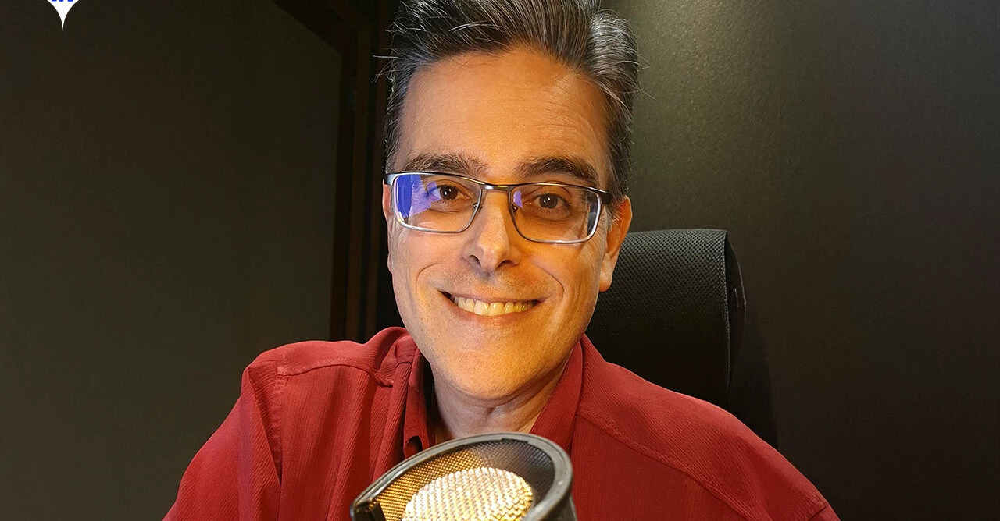
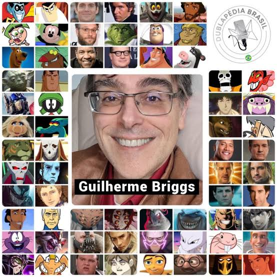

Guilherme Briggs nasceu em 1970, na cidade do Rio de Janeiro, filho de Suelly Neves e Henrique Briggs. Durante a sua infância, Guilherme criava com seu pai personagens e histórias em um antigo gravador, numa espécie de radioteatro caseiro. Guilherme se refere ao pai como seu grande incentivador para as artes. Na ocasião do lançamento do filme Jornada nas Estrelas IV: A Volta para Casa, uma amiga sua publicou uma carta num jornal criticando a dublagem da produção. Por conta disso, Guilherme foi convidado junto da amiga a visitar o estúdio responsável por esta dublagem, a VTI Rio. Ele então soube que poderia estagiar no lugar, passando a trabalhar lá depois como dublador.

Em 1991, começou a sua carreira de dublador na VTI Rio, e posteriormente passou a dublar também em outros estúdios, e seu primeiro personagem fixo foi Worf, de Jornada nas Estrelas: A Nova Geração. Em desenho animado, seu primeiro personagem foi Eek, de Eek! The Cat. Em 1994, começou a trabalhar na Herbert Richers, levado por Orlando Drummond, com quem trabalhava na VTI Rio, e no mesmo ano se tornou o locutor do Cartoon Network Brasil e mais tarde fez locuções para a Som Livre e Rede Globo. Com a morte do dublador Alexandre Lippiani em 1997, Guilherme Briggs o substituiu como dublador de Clark Kent em Lois & Clark: As Novas Aventuras do Superman e em outras produções com o personagem. Também trabalhou na série infantil Teletubbies, como narrador. Em 2003, passou a ser diretor na Delart, onde dirigiu as dublagens de Watchmen, Avatar e Mad. Um dos seus principais trabalhos[carece de fontes] foi na série Friends, dublando Ross Geller, durante a 1ª temporada e a 3ª temporada e posteriormente a 10ª temporada. Entre outros personagens, já dublou Freakazoid, Buzz Lightyear, Superman, Mewtwo de Pokémon, Cosmo de Os Padrinhos Mágicos, Optimus Prime de Transformers e Samurai Jack. Os principais atores que Briggs dubla são Denzel Washington, Brendan Fraser, Owen Wilson, Zachary Quinto, David Schwimmer, Dwayne Johnson, Seth Rogen e Julian McMahon. Em 2022, se mudou para Teresópolis. Como passou a morar longe dos estúdios, decidiu não dublar mais presencialmente. Agora, dubla apenas via dublagem remota, através de um estúdio montado em sua casa.
Como blogueiro, produz para seu blog Teatro de Bonecos vídeos e imagens humorísticos com seus bonecos, como experimentação de suas técnicas de dublagem. Seu personagem principal no blog é o fantoche de cachorro Tobias. Por esse trabalho, Briggs venceu em 2009 e em 2011 o prêmio TopBlog de Melhor Blog de Humor pelo júri popular e pelo júri acadêmico. Ainda na blogsfera, é colaborador do blog Jovem Nerd, especialmente do podcast Nerdcast. Também participa de eventos relacionados a filmes, séries e jogos, como o Sana Fest, no Ceará e dubla todos os personagens animados do canal no YouTube, Toró de Miolo.
Guilherme Briggs é reconhecido por profissionais da dublagem e da dramaturgia como um dos melhores dubladores do Brasil. A respeito de Briggs, Orlando Drummond considerava que "Sabe-se pouco do muito que ele faz e é capaz de fazer por dominar bem o inglês e saber brincar com a língua para poder criar no uso da voz". Em 2013, Alexandre Moreno disse que "[...] Guilherme é a referência da área na nova geração, pois não matou a criança que tem em si". Atores dirigidos por Briggs, como Leandro Hassum, que trabalhou com ele em Meu Malvado Favorito, elogiaram a capacidade de Briggs de dar informalidade às falas; Rodrigo Santoro, dublador em Rio, reconheceu sua versatilidade.
Guilherme Briggs é casado desde 2003 com a roteirista de histórias em quadrinhos Fran Briggs. Tem como gostos pessoais ciência, livros, ilustração, filmes, séries de televisão, desenhos animados e histórias em quadrinhos, particularmente animes e mangás, especialmente os animes Maison Ikkoku e Berserk. Considera como seu personagem preferido por ele dublado Daggett, de Os Castores Pirados. Desde 2022, Briggs reside na cidade de Teresópolis.
